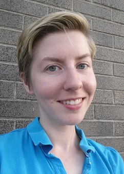

About Us

Mission
Our goal is to unite Information Technology and Computer Science students
with faculty and potential employers.
We also encourage students to network
with each other, and pursue many of the opportunities currently happening
at LCC and within the community!
No matter where your interests lie in the field, ITSA has something for you.
Executive Board

Brendan Fleishans
Advisor

Maureen McCallum
President
Our executive board is comprised of ITSA leaders and advisors.
Justin Macauley
Secretary

Bill Schafer
Chief of Financial Affairs

Perry Thompson
CIT Student Delegate
What We Do
ITSA schedules Information Technology presentations from technology leaders
in the greater Lansing area.
We also have a monthly newsletter that profiles
local technology companies and possible job openings. The newsletter also
promotes students and Lansing Community College leaders in the Computer
Information Technologies (CIT) department.
We do all of this in an effort to connect students with the local IT industry.
Our goal is also to encourage students to support each other and realize the
value of networking.
Join Us